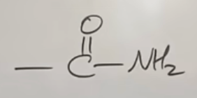
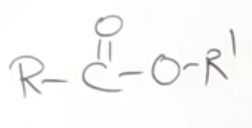
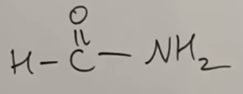
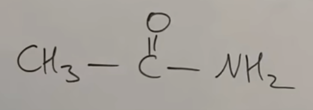
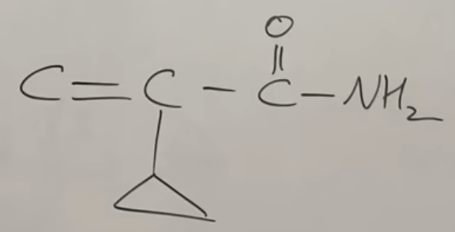
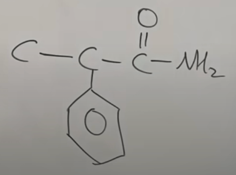

IUPAC Nomenclature : Naming Of Acid Amides and Esters
(You Tube Playlist Link)
- Some Basic Principles and Naming Of Alkanes
- Complex Substituents and Cycloalkanes
- Naming Of Alkenes and Alkynes
- Functional Groups with Secondary Suffix
- Naming Of Alcohols
- Naming Of Aldehydes and Ketones
- Naming of Carboxylic Acids and Acid Halides
- Naming Of Acid Amides and Esters
- Naming of Cyanides, Amines, and Ethers
- Naming of Polyfunctional Compounds (More than One Functional Group)
- Naming Of Aromatic Compounds - Benzene Rings
- Naming Of Bicyclo and Spiro Compounds
-
Introduction to nomenclature of Acid Amides and Esters
- Acid Amides are \(\text{-CONH}_2\)
-
Acid amides can also be represented as :
 - Secondary suffix = "amide"
- If the carbon of amide is directly attached to a ring, it is called "Carboxamide"
- Esters are : \(\text{R-COOR}^{'}\), where "\(\text{R}\)" and "\(\text{R}^{'}\)" are alkyl groups
-
Esters can also be represented as :
 - Secondary suffix = "alkyl alkanoate"
- The alkyl group \(\text{R}^{'}\) is the "alkyl" - however long it may be, (see video) and the \(\text{R}\) is the "alkanoate".
- If the terminal ester functional group is directly attached to a ring, it is called Carboxylate.
-
Nomenclature of some common amides
-
Common/First/Smallest Acid Amides:
 - Methanamide
 - Ethanamide
 - 2-cyclopropyl prop-2-enamide
 - 2-phenyl propanamide
-
Common/First/Smallest Acid Amides:
-
Questions on naming of Amides
-
Naming of Esters - Examples and Practice